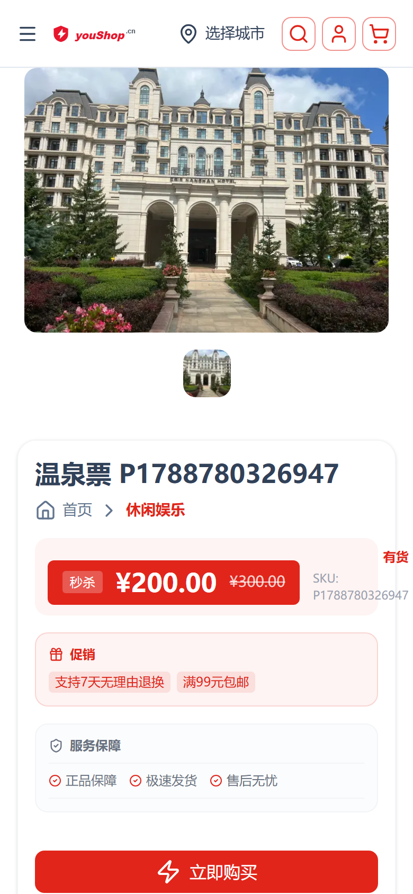
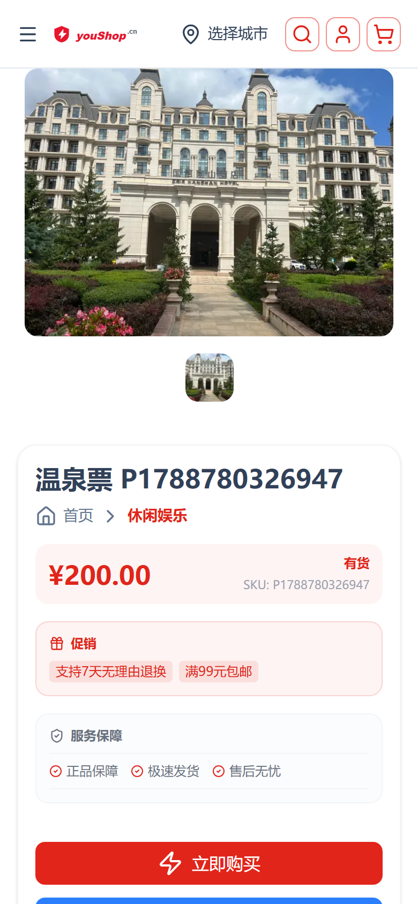
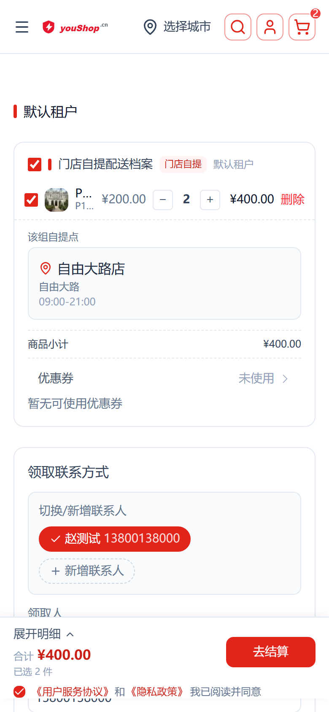
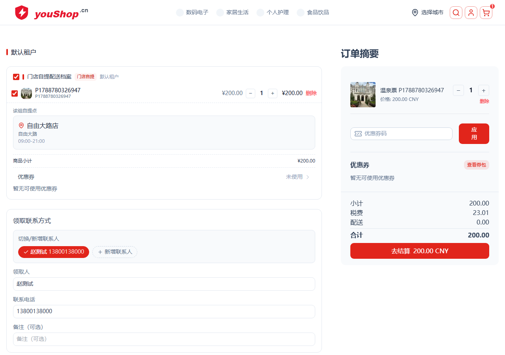

classic
jdA
jdB
已部署 nshop 前端 · web-admin 后台切换入口，生产 www.youshop.cn / t2 于 2026-09-08。
商品详情页价格块新增两种京东风格版式，均在 后台「店铺信息」页 一键切换；原经典版保留。京东风格固定走京东红 #E1251B，不随商店主题主色。
| 版式 | 说明 | 适用 |
|---|---|---|
classic | 经典：现价(主题色) + 库存/SKU | 默认，跟随主题主色 |
jdA | 京东A 横幅促销价：现价 + 划线原价 + 降价额 + 促销标签 | 有划线价时展示促销感氛围 |
jdB | 京东B 深色价签条：整条京东红价签 + 白字现价 + 划线原价 + 秒杀角标 | 强促销、抢眼价签 |
保存逻辑：仅改写 Channel.customFields.detailConfig → blocks.price.style，保留 detailConfig 其余字段；后端 myUpdateChannelCustomFields 仅合并传入字段，不触碰安全字段。
前端 useDetailConfig(读 detailConfig) → blockStyle(config,'price','classic') → PriceBlock.vue 按 style 渲染 PriceBlockJdA/JdB 或 classic。划线价数据来自 ProductVariant.customFields.listPrice（usePriceWithList 计算现价/划线价/降价额，含税率开关判断）。
| 版式 | 截图 | 关键点 |
|---|---|---|
classic |
|
现价 ¥101.70 + 有货 + SKU，颜色/卡片/CTA 无回归 |
jdA |
|
京东红横幅促销：划线原价 ¥159.00 + 降价 ¥57.30 + 直降/到手价标签 |
jdB |
 |
深红价签条：秒杀角标 + 白字现价 ¥200.00 + 划线原价 ¥300.00（默认渠道 id=1 已启 jdB；商品60 已设 listPrice=30000） |
演示时临时在默认渠道写入 price.style 并为该商品设划线价（listPrice=15900，¥159），演示完已复原（style 回 classic、listPrice 置 0）。
usePriceWithList → PriceBlock.vue → ProductDetailPriceBlockJdB）无 bug，style 为 jdB 即渲染红色价签条。此前「选了 jdB 但前台不生效」的原因是 web-admin「店铺信息」只写入登录账号所关联的 activeChannel；而 www.youshop.cn 前台经 GetChannelTheme 解析的是 __default_channel__(id=1)。当两者不一致时，保存落点 ≠ 展示渠道，前台自然仍是 classic。故要切换某域名前台的价格块样式，须在该域名解析到的实际 channel（如 id=1）上保存。另：jdB/jdA 的「秒杀角标/划线价」只有在商品设置 listPrice > 现价 时才展示；未设划线价时 jdB 仅呈现红色价签条 + 白字现价，属预期。渠道税率由原先的布尔开关升级为三态 Channel.customFields.taxMode：inclusive(含税价)、zero(零税价)、exclusive(不含税价)。C端商品价/划线价经纯函数 displayCentsFromNet() 按模式换算展示，结算页税额行 OrderSummary.showTaxRow 按模式显隐；运营端录入口径：price 字段直存录入原值，后台价格不做任何税率再计算（详见 §五 口径定稿），前台展示/结算价按各渠道 taxMode 在前台层换算。
设置入口：后台(b.e.joho.cn/guanli) → 店铺信息 → 「税率方式」三态下拉（含税价 / 零税率 / 不含税价）→ 保存。保存经 myUpdateChannelCustomFields 合并写入 taxMode 字段。
| 模式 | 商品价 / 划线价展示 | 结算页税额行 |
|---|---|---|
inclusive 含税价 | 录入价原样展示（录入价=展示价=应付价） | 显示「税费」行（如标准税率13%）为价内拆税——税额已含在商品价内，仅展示拆分、不加收，应付总额 = 录入价 |
zero 零税价 | 录入价原样展示 | 不显示税额行，总额 = 录入价 |
exclusive 不含税价 | 录入价 ×(1+税率) 换算为含税应付价展示（价税分离） | 显示税额行（加收），总额 = 录入价 + 税额 |
inclusive 含税价（默认渠道 root，已修复结算口径，实测定稿）以录入价 ¥200.00（标准税率13%）为例：商品页与结算页「商品价格」均显示 ¥200.00；结算页「税费」行显示 ¥23.01(=200−200/1.13)；应付/合计仍为 ¥200.00，不是 200+23.01。
| 场景 | 截图 | 关键点 |
|---|---|---|
| 商品页 |  | 现价 ¥200.00（录入价即售价）+ 有货 |
| 结算页(移动) |  | 商品价格 ¥400（2件×200）+ 税费 ¥46.02（价内拆）+ 应付 ¥400；商品行图片正常渲染 |
| 结算页(订单摘要-桌面) |  | 小计(商品价格) ¥200.00 + 税费 ¥23.01 + 配送 ¥0.00 + 合计 ¥200.00 |
zero 零税价（显示逻辑）零税 = 商品不涉税。以录入价 ¥200.00（标准税率13%）为例：商品页展示 ¥200.00；结算页 商品价格 ¥200.00、不显示「税费」行（taxSummary 为空）、应付/合计 ¥200.00。
| 场景 | 关键点 |
|---|---|
| 商品页 | 现价 ¥200.00（录入价原样，无税） |
| 结算页(移动) | 商品价格 ¥200.00 + 应付 ¥200.00，无税费行 |
| 结算页(订单摘要-桌面) | 小计(商品价格) ¥200.00 + 合计 ¥200.00，无税费行 |
inclusive（含税价；t2 已对齐 pricesIncludeTax=true，无零税渠道）。zero 为可选税率方式——后台「店铺信息→税率方式」切换后 C 端即时生效，商品价原样展示、免税额行；上表为 P=200 的换算逻辑示例。exclusive 不含税价（价税分离，显示逻辑）以录入价 ¥200.00（标准税率13%）为例：商品页主价显示 含税价 ¥226.00(=200×1.13)；结算页 商品价格(净) ¥200.00 + 税费 ¥26.00(=200×0.13，加收) → 应付/合计 ¥226.00。
| 场景 | 关键点 |
|---|---|
| 商品页 | 主价显示含税价 ¥226.00（价税分离，净价隐含 200） |
| 结算页(移动) | 商品价格 ¥200.00 + 税费 ¥26.00（加收）+ 应付 ¥226.00 |
| 结算页(订单摘要-桌面) | 小计(商品价格) ¥200.00 + 税费 ¥26.00 + 合计 ¥226.00 |
displayCentsFromNet() + taxFromGross() 即时换算生效，上表为 P=200/13% 的换算逻辑示例。本次修复（2026-09-10）：此前 t2 分类列表页温泉票显示 176.99 CNY，而详情页显示 ¥200.00，两处不一致。根因：
ProductCard/GoodsGrid 用 pickDisplayPrice() 直接取 price（Vendure 恒为净价）；而 t2 渠道 pricesIncludeTax=true 时 price=录入价/1.13=176.99。usePriceWithList() 用 priceWithTax（该渠道解释下的含税总价，=录入价 200）。两处基准不同 → 列表比详情少 13%。修复口径（渠道感知、统一列表/详情）：同一商品在列表页与详情页显示同一价。运营端录入基准价在 pricesIncludeTax=false 渠道=price、true 渠道=priceWithTax；价签展示 inclusive/zero → 录入基准价，exclusive → priceWithTax（价税分离总价）。pickDisplayPrice() 与 usePriceWithList() 现共用同一规则，useTaxMode() 同时暴露 taxMode + pricesIncludeTax（GetChannelTheme 增加该字段）。
| 场景 | 截图（手机 390×844 dpr2，现网 www.youshop.cn/t2） | 关键点 |
|---|---|---|
| 分类列表 · 休闲娱乐 | 温泉票 200.00 CNY（此前 176.99，含税口径已与详情一致） | |
| 商品详情 · 温泉票(jdA) | 现价 ¥200.00 + 划线 ¥300.00 + 降价 ¥100.00（列表/详情一致） |
发现并修复 web-admin「店铺信息」保存的 GRAPHQL_VALIDATION_FAILED 隐患：myUpdateChannelCustomFields 返回类型为 JSON! 标量，无法带 { id } 选择集，否则保存必失败。已去掉该选择并重新部署 web-admin。
· 结算环节金额修复（inclusive）：桌面端「订单摘要」的商品价格(小计)此前直接取 Vendure 整单 subTotal(净 176.99)，含税渠道下错误显示为 176.99+税费23.01。现 OrderSummary.vue 按渠道 taxMode 出对客「商品价格」——inclusive 显示含税商品价(净×1.13=200)、税费23.01为价内拆税；exclusive/zero 显示净价200。移动端结算栏(CheckoutCnSummaryBar / PerBoxSummary)本就用箱行 lineTotal(含税)，口径已一致。
· 商品行图片缺失修复：① 后端 order-box-shop.resolver.ts 为 orderBoxes 补加载 lines.featuredAsset / 变体 / 商品级 featuredAsset，令 featureAssetSource 有值；② 前端 BoxLines.vue 的 lineImage() 为相对路径补 /assets/ 前缀，拼成全 URL 商品图。两处均已部署。
| 仓库 | 文件 | 改动 |
|---|---|---|
| nshop | layers/base/app/utils/detail-config.ts | DetailBlockCfg.style + blockStyle() |
layers/base/app/components/product-detail/PriceBlock.vue / PriceBlockJdA.vue / PriceBlockJdB.vue、composables/usePriceWithList.ts、gql/fragments/product.gql、i18n zh-CN/en-US | 划线价查询 + 京东版式 + 语料 | |
| web-admin | src/pages/decorate/shop-info/index.vue | 价格块样式分段选择器 |
src/apis/channel.ts | 查询/字段补 detailConfig |
| 仓库 | 文件 | 改动 |
|---|---|---|
| nshop | layers/base/app/utils/tax-price.ts、composables/useTaxMode.ts | 税价换算纯函数 displayCentsFromNet + 渠道 taxMode/pricesIncludeTax 读取 |
layers/base/app/utils/display-price.ts（pickDisplayPrice）、composables/usePriceWithList.ts | 价签基准渠道感知（pricesIncludeTax=true→priceWithTax，否则 price），列表/详情共用同口径 | |
layers/base/app/components/product/ProductCard.vue、home/blocks/GoodsMasonryGrid.vue、home/blocks/GoodsSingleList.vue、home/jd/JdProductGrid.vue | pickDisplayPrice 调用点补传 pricesIncludeTax，使列表价=详情价 | |
layers/base/app/components/checkout/OrderSummary.vue | showTaxRow 按 taxMode 显隐税额行 | |
gql/queries/context.gql | GetChannelTheme 改用 taxMode（旧 taxEnabled 已移除）+ 增加 pricesIncludeTax | |
| vendure | cjk-plugin/src/tenant/tenant-channel-custom-fields.ts、cjk-plugin/src/tax/channel-tax-line-calculation-strategy.ts | 渠道级 taxMode 字段 + 订单税额计算 |
| web-admin | src/components/product-tabs/ProductVariantMatrixTab.vue、src/composables/useVariantMatrix.ts、src/apis/product.ts | 基础信息(价/划线价/成本价/库存)自动填入变体 + 税价换算 |